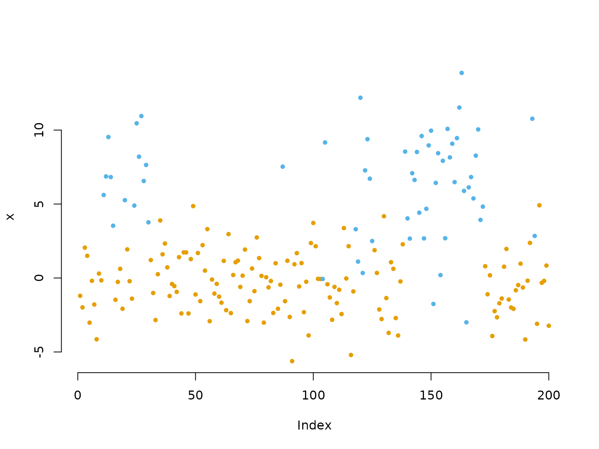
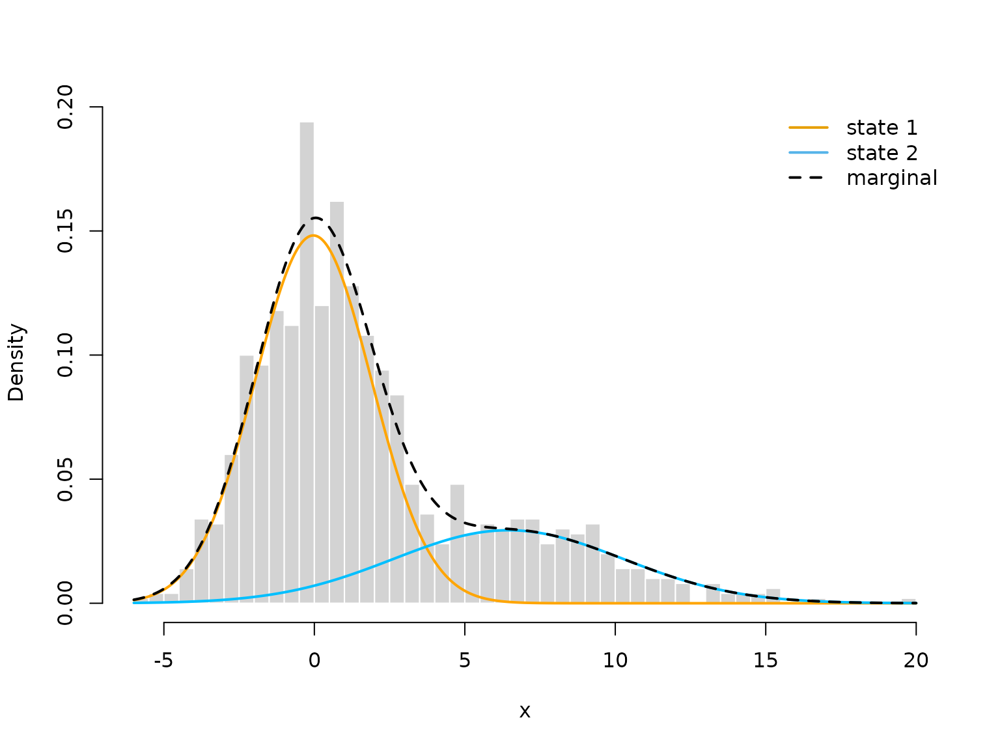
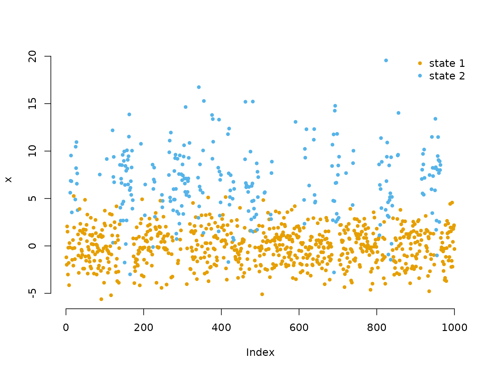
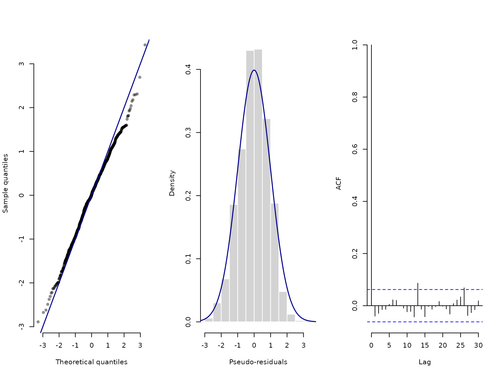

1 Introduction to LaMa
Jan-Ole Fischer
Intro_to_LaMa.RmdThe R package LaMa provides convenient
functions for fitting a variety of latent Markov
models, including hidden Markov models (HMMs),
hidden semi-Markov models (HSMMs), state space
models (SSMs) and continuous-time variants via
direct numerical maximum likelihood estimation. The
core idea underlying this package is given in Mews et al. (2025), namely for all these models
the likelihood function has the same structure, and hence unification of
inference procedures is attractive.
Model specification in LaMa amounts to defining
custom likelihood function using provided
building-blocks – similar to stacking Legos. This approach is different
(and arguably more difficult) than model specification in packages like
moveHMM, momentuHMM, or hmmTMB.
The modular approach, however, has the advantage of being more flexible.
Specifying simple models is still very easy and convenient while model
complexity can be increased to an arbitrary level and arbitrarily fine
control is available for advanced users.
The main building-block functions to define the likelihood are
forward, tpm and stationary and
we showcase the simplest versions in the following introductory example.
Downstream functions for state decoding and residual calculation are
also available.
Introductory example: Homogeneous HMM
In this vignette, we start from the most basic hidden Markov model (HMM) we can think of. Such a basic N-state HMM is a doubly stochastic process in discrete time. Observations are generated by one of N possible distributions f_j(x_t), j = 1, \dots N with an unobserved N-state Markov chain selecting which distribution is active at any given time point. Hence, HMMs are temporally-dependent mixture models. For a more exhaustive description of such models see Zucchini et al. (2016). They are very popular across a wide range of empirical disciplines including ecology, sports and finance, where time-series data with underlying sequential dependencies need to be analysed. The above definition already hints at the two main model assumptions:
- f(s_t \mid s_{t-1}, s_{t-2}, \dots, s_1) = f(s_t \mid s_{t-1}) (Markov assumption)
- f(x_t \mid x_1, \dots, x_{t-1}, x_{t-1}, x_T, s_1, \dots, s_T) = f(x_t \mid s_t) (conditional independence assumption).
The hidden state process is described by an N-state Markov chain which is fully characterised by its initial distribution \delta^{(1)} = (\Pr(S_1 = 1), \dots, \Pr(S_1 = N)) and the one-step transition probabilities \gamma_{ij} = \Pr(S_t = j \mid S_{t-1} = i), \quad i,j = 1, \dotsc, N. These are typically summarised in a transition probability matrix (t.p.m.) \Gamma = (\gamma_{ij})_{i,j = 1, \dots, N}, where row i is the conditional one-step-ahead distribution of the state process given that the current state is i. For example a t.p.m. for a two state Markov chain could be
(Gamma = matrix(c(0.9, 0.1,
0.2, 0.8), nrow = 2, byrow = TRUE))
#> [,1] [,2]
#> [1,] 0.9 0.1
#> [2,] 0.2 0.8We often assume stationarity of the underlying
Markov chain because well-behaved Markov chains converge to a unique
stationary distribution. When we e.g. observe an animal and model its
behavioral states by a Markov chain, it is reasonable to assume that the
chain has been running for a long time prior to our observation and thus
already converged to its stationary distribution. This distribution
(which we call \delta) can be computed
by solving the system of equations
\delta \Gamma = \delta, \quad \text{s.t.} \; \sum_{j=1}^N \delta_j = 1,
which is implemented in the function stationary().
For stationary HMMs, we then replace the initial distribution \delta^{(1)} by this stationary distribution.
We can easily compute the stationary distribution associated with the
above t.p.m. using
(delta = stationary(Gamma))
#> S1 S2
#> 0.6666667 0.3333333This stationary distribution can be interpreted as the log-run-time proportion of time spent in each state. For the conditional distributions of the observations f_j(x_t), a typical choice would be some kind of parametric family like normal or gamma distributions with state-specific means and standard deviations.
Generating data from a 2-state HMM
To get an intuition for this model, we simulating some data from a
simple 2-state HMM with Gaussian state-dependent distributions. Here we
can again use stationary() to compute the stationary
distribution.
# parameters
mu = c(0, 6) # state-dependent means
sigma = c(2, 4) # state-dependent standard deviations
Gamma = matrix(c(0.95, 0.05, # transition probability matrix
0.15, 0.85),
nrow = 2, byrow = TRUE)
delta = stationary(Gamma) # stationary distribution
# simulation
n = 1000
set.seed(123)
s = rep(NA, n)
s[1] = sample(1:2, 1, prob = delta) # sampling first state from delta
for(t in 2:n){
# drawing the next state conditional on the last one
s[t] = sample(1:2, 1, prob = Gamma[s[t-1],])
}
# drawing the observation conditional on the states
x = rnorm(n, mu[s], sigma[s]) # independent given the state sequence
color = c("orange", "deepskyblue")
plot(x[1:200], bty = "n", pch = 20, ylab = "x",
col = color[s[1:200]])
Inference by direct numerical maximum likelihood estimation
Inference for HMMs is more difficult compared to e.g. regression modelling as the observations are not independent. We want to estimate model parameters via maximum likelihood estimation, due to the nice properties possessed by the maximum likelihood estimator. However, computing the HMM likelihood for observed data points x_1, \dots, x_T is a non-trivial task as we do not observe the underlying states. We need to sum out all possible state sequences which would be infeasible for general state processes. We can, however, exploit the Markov property and calculate the likelihood recursively as a matrix product using the so-called forward algorithm. In closed form, the HMM likelihood then becomes
L(\theta) = \delta^{(1)} P(x_1) \Gamma P(x_2) \Gamma \dots \Gamma P(x_T)
1^t,
where \delta^{(1)} and \Gamma are as defined above, P(x_t) is a diagonal matrix with
state-dependent densities or probability mass functions f_j(x_t) = f(x_t \mid S_t = j) on its
diagonal and 1 is a row vector of ones
with length N. All model parameters are
here summarised in the vector \theta.
Being able to evaluate the likelihood function, it can be numerically
maximised by e.g. nlm().
The algorithm explained above suffers from numerical underflow and
for T only moderately large the
likelihood is rounded to zero. Thus, one can use a scaling strategy,
detailed by Zucchini et al. (2016), to avoid this and calculate the
log-likelihood recursively. This version of the forward algorithm is
implemented in LaMa and written in C++ for
speed.
Additionally, for HMMs we often need to constrain the domains of
several of the model parameters in \theta (i.e. positive standard deviations or
a transition probability matrix with elements between 0 and 1 and rows
that sum to one). One could now resort to constrained numerical
optimisation but in practice the better option is to maximise the
likelihood w.r.t. a transformed version (to the real number line) of the
model parameters by using suitable invertible and differentiable link
functions (denoted by par in the code). For example we use
the log-link for parameters that need to be strictly positive and the
multinomial logistic link (softmax) for the transition probability
matrix. While the former can easily be coded by hand, the latter is
implemented in the functions of the tpm family for
convenience and computational speed.
For efficiency, it is also advisable to evaluate the state-dependent
densities (or probability mass functions) vectorised outside the
recursive forward algorithm. This results in a matrix containing the
state-dependent likelihoods for each data point (rows), conditional on
each state (columns), which, throughout the package, we call the
allprobs matrix.
In this example, within the negative log-likelihood function we
- build the transition probability matrix using the
tpm()function, - compute the stationary distribution of the Markov chain using
stationary(), - build the
allprobsmatrix, and - calculate the log-likelihood using
forward()in the last line.
We return -1 times the log-likelihood such that it can be numerically minimised.
nll = function(par, x){
# 1) Transition probability matrix
Gamma = tpm(par[1:2]) # multinomial logistic link (softmax)
# 2) Stationary distribution for this matrix
delta = stationary(Gamma) # will be used as initial
# Parameter transformations for unconstrained optimisation
mu = par[3:4] # no transformation needed
sigma = exp(par[5:6]) # strictly positive
# 3) Calculating state-dependent densities outside the forward algorithm
allprobs = matrix(1, length(x), 2)
for(j in 1:2) allprobs[,j] = dnorm(x, mu[j], sigma[j])
# 4) Run the forward algorithm
-forward(delta, Gamma, allprobs)
}We can now fit the model to data by defining a vector of initial
parameter values on the transformed scale and calling nlm()
to numerically maximise the likelihood. The initial parameters are not
chosen too well here, but the estimation procedure still converges to
the correct values. In practice, it is advisable to try several
different sets of initial parameters to ensure convergence to the global
maximum.
The tpm() function uses the multinomial logistic
(softmax) link to map unconstrained real-valued parameters to valid
transition probabilities. To initialise near a specific off-diagonal
probability p, we therefore supply
\text{logit}(p) = \log(p / (1-p)),
i.e. qlogis(p), as the starting value. Here we start near
0.05 for both off-diagonal entries — not too far from the truth but
intentionally imperfect:
par = c(logitGamma = qlogis(c(0.05, 0.05)),
mu = c(1,4),
logsigma = c(log(1),log(3)))
# initial transformed parameters: not chosen too well
system.time(
opt <- nlm(nll, par, x = x)
)
#> user system elapsed
#> 0.118 0.013 0.131We see that implementation of the forward algorithm in C++ leads to really fast estimation speeds.
Visualising results
After model estimation, we need to retransform the unconstrained parameters according to the code inside the likelihood:
estimate = opt$estimate
# transform parameters to natural scale
Gamma = tpm(estimate[1:2])
delta = stationary(Gamma) # stationary HMM
mu = estimate[3:4]
sigma = exp(estimate[5:6])
hist(x, prob = TRUE, bor = "white", breaks = 40, main = "")
curve(delta[1]*dnorm(x, mu[1], sigma[1]), add = TRUE, lwd = 2, col = "orange", n=500)
curve(delta[2]*dnorm(x, mu[2], sigma[2]), add = TRUE, lwd = 2, col = "deepskyblue", n=500)
curve(delta[1]*dnorm(x, mu[1], sigma[1])+delta[2]*dnorm(x, mu[2], sigma[2]),
add = TRUE, lwd = 2, lty = "dashed", n=500)
legend("topright", col = c(color, "black"), lwd = 2, bty = "n",
lty = c(1,1,2), legend = c("state 1", "state 2", "marginal"))
We can also decode the most probable state sequence with the
viterbi() function, when first computing the
allprobs matrix:
allprobs = matrix(1, length(x), 2)
for(j in 1:2) allprobs[,j] = dnorm(x, mu[j], sigma[j])
states = viterbi(delta, Gamma, allprobs)
plot(x, pch = 20, bty = "n", col = color[states])
legend("topright", pch = 20, legend = c("state 1", "state 2"),
col = color, box.lwd = 0)
Lastly, we can do some model-checking using pseudo-residuals. First, we need to compute the local state probabilities of our observations:
probs = stateprobs(delta, Gamma, allprobs)Then, we can pass the observations, the state probabilities, the
parametric family and the estimated parameters to the
pseudo_res() function to get pseudo-residuals for model
validation. These should be standard normally distributed if the model
is correct.
pres = pseudo_res(x, # observations
"norm", # parametric distribution to use
list(mean = mu, sd = sigma), # parameters for that distribution
probs) # local state probabilities
# use the plotting method for LaMaResiduals
plot(pres, hist = TRUE)
In this case, our model looks really good – which it should because it is correctly specified.
Continue reading with Automatic differentiation via RTMB.